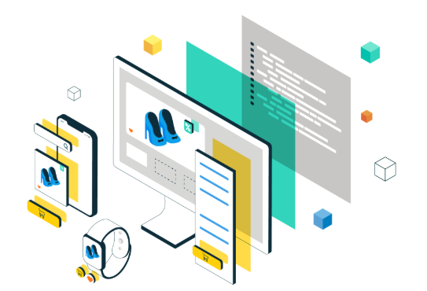

<!DOCTYPE html>
<html lang="en">

<head>
  <meta charset="UTF-8">
  <meta http-equiv="X-UA-Compatible" content="IE=edge">
  <meta name="viewport" content="width=device-width, initial-scale=1.0">
  <title>Madavaram Rao Portfolio</title>
  <link rel="shortcut icon" href="./assets/images/venky.jpg" type="image/x-icon">
  <link rel="stylesheet" href="./Port.css">
  <link rel="preconnect" href="https://fonts.googleapis.com">
  <link rel="preconnect" href="https://fonts.gstatic.com" crossorigin>
  <link href="https://fonts.googleapis.com/css2?family=Poppins:wght@300;400;500;600&display=swap" rel="stylesheet">
  <link rel="stylesheet" href="https://cdnjs.cloudflare.com/ajax/libs/font-awesome/6.0.0-beta3/css/all.min.css">
</head>
<body class="dark-mode">
  <button id="mode-toggle" class="mode-toggle"><ion-icon name="moon-outline"></ion-icon></button>
  <main>
    <!--
      - #SIDEBAR
    -->
    <aside class="sidebar" data-sidebar>
      <div class="sidebar-info">
        <figure class="avatar-box">
          
          

        </figure>
        <div class="info-content">
          <h1 class="name" title="Manohitha Rao">Manohitha Rao</h1>
          <p class="title">Software Developer</p>
        </div>
        <button class="info_more-btn" data-sidebar-btn>
          <span>Show Contacts</span>
          <ion-icon name="chevron-down"></ion-icon>
        </button>
      </div>
      <div class="sidebar-info_more">
        <div class="separator"></div>
        <ul class="contacts-list">
          <li class="contact-item">
            <div class="icon-box">
              <ion-icon name="mail-outline"></ion-icon>
            </div>
            <div class="contact-info">
              <p class="contact-title">Email</p>
              <a href="mailto:manohitharaoo@gmail.com" class="contact-link">manohitharaoo@gmail.com</a>
            </div>
          </li>
          <li class="contact-item">
            <div class="icon-box">
              <ion-icon name="phone-portrait-outline"></ion-icon>
            </div>
            <div class="contact-info">
              <p class="contact-title">Phone</p>
              <a href="tel:+16465433099" class="contact-link">+1 6465433099</a>
            </div>
          </li>
          <li class="contact-item">
            <div class="icon-box">
              <ion-icon name="calendar-outline"></ion-icon>
            </div>
            <div class="contact-info">
              <p class="contact-title">DOB</p>
              <time datetime="2005-03-07">Nov 15, 1997</time>
            </div>
          </li>
          <li class="contact-item">
            <div class="icon-box">
              <ion-icon name="location-outline"></ion-icon>
            </div>
            <div class="contact-info">
              <p class="contact-title">Location</p>
              <address>Jersey City , New Jersey</address>
            </div>
          </li>
        </ul>
    </aside>
    <!--
      - #main-content
    -->
    <div class="main-content">
      <!--
        - #NAVBAR
      -->
      <nav class="navbar">
        <ul class="navbar-list">
          <li class="navbar-item">
            <button class="navbar-link  active" data-nav-link>About</button>
          </li>
          <li class="navbar-item">
            <button class="navbar-link" data-nav-link>Resume</button>
          </li>
          
          <li class="navbar-item">
            <button class="navbar-link" data-nav-link>Certifications</button>
          </li>
        </ul>
      </nav>
      <!--
        - #ABOUT
        -->
    <article class="about  active" data-page="about">
        <header>
        <h2 class="h2 article-title">About me</h2>
        </header>
        <section class="about-text">
        <p>
          I am a software Developer with experience in building scalable, secure microservices and cloud-native applications in the financial and enterprise sectors. I specialize in backend development using Java, Spring Boot, Kotlin, and Kafka, and create modern, responsive frontends with ReactJS and Redux.

          Skilled in deploying containerized applications using Docker and Kubernetes (AWS EKS, Azure AKS), I also bring expertise in CI/CD automation with Jenkins and cloud platforms including AWS and Azure. I’m passionate about clean code, system design, and mentoring teams in Agile environments to deliver high-quality, production-ready software.
        </p>
        </section>
        <!--
            - service
        -->
        <section class="service">
        <h3 class="h3 service-title">What I'm doing</h3>
        <ul class="service-list">
            <li class="service-item">
            <div class="service-icon-box">
                
            </div>
            <div class="service-content-box">
                <h4 class="h4 service-item-title">Backend & Microservices</h4>
                <p class="service-item-text">
                  Building scalable APIs with Java, Spring Boot, and Kotlin
                  Modernizing legacy systems into microservices
                </p>
                </p>
            </div>
            </li>
            <li class="service-item">
            <div class="service-icon-box">
                
            </div> 
            <div class="service-content-box">
                <h4 class="h4 service-item-title">Frontend Development</h4>
                <p class="service-item-text">
                  Developing responsive UIs with ReactJS and Redux
                  Ensuring cross-browser support and component reusability
                </p>
            </div>
            </li>
            <li class="service-item">
            <div class="service-icon-box">
                
            </div>
            <div class="service-content-box">
                <h4 class="h4 service-item-title">Cloud & DevOps</h4>
                <p class="service-item-text">
                  Deploying apps on AWS & Azure using Docker and Kubernetes
                  Automating CI/CD pipelines and infrastructure monitoring
                </p>
            </div>
            </li>
            <li class="service-item">
            <div class="service-icon-box">
                
            </div>
            <div class="service-content-box">
                <h4 class="h4 service-item-title">Database Management</h4>
                <p class="service-item-text">
                  Managed PostgreSQL, Oracle, and MongoDB for data integrity and scalability
                  Writing efficient queries, PL/SQL, and optimizing performance
                </p>
            </div>
            </li>
        </ul>
        </section>         
    </article>
      <!--
        - #RESUME
      -->
      <article class="resume" data-page="resume">
        <header>
          <h2 class="h2 article-title">Resume</h2>
        </header>
        <section class="timeline">
          <div class="title-wrapper">
            <div class="icon-box">
              <ion-icon name="book-outline"></ion-icon>
            </div>
            <h3 class="h3">Experience</h3>
          </div>
          <ol class="timeline-list">
            <li class="timeline-item"></li>
                
             <li class="timeline-item">
              <h4 class="h4 timeline-item-title">Western Union, Montvale, NJ - Sr. Full Stack Developer</h4>
              <span>Nov,2023 - Present</span>
              <p class="timeline-text">
                Working on a cloud-native, microservices-based platform enabling global financial transactions like ACH, overdrafts, and bill payments. I develop scalable backend services using Java, Kotlin, Spring Boot, and Kafka, and build modern SPAs with ReactJS, Redux, and custom hooks. I ensure secure, well-tested systems through OAuth2, JUnit, and Jest, and automate CI/CD using Jenkins, Docker, and Kubernetes (EKS). I also manage cloud infrastructure with AWS ECS, RDS, S3, and handle large-scale data using Cassandra.
              </p>
            </li>
            <li class="timeline-item">
              <h4 class="h4 timeline-item-title">Delta Dental Ins, San Francisco, CA - Full Stack Developer</h4>
              <span>Mar,2021 - July,2023</span>
              <p class="timeline-text">
                Contributed to modernizing Delta Dental’s insurance systems by developing responsive ReactJS interfaces and scalable microservices with Java 17, Spring Boot, and Hibernate. Integrated Kafka for asynchronous communication, optimized database operations with Oracle and PL/SQL, and deployed applications using AWS ECS and Lambda. Ensured secure, high-performing, and cloud-ready solutions aligned with HIPAA compliance and enhanced user experience.
              </p>
            </li>
            <li class="timeline-item">
              <h4 class="h4 timeline-item-title">Lowe's, Mooresville - Software Developer</h4>
              <span>Aug,2018 - Feb,2021</span>
              <p class="timeline-text">
                At Lowe’s, I helped enhance the e-commerce platform by building cloud-native microservices using Java, Spring Boot, Angular, and Kafka to improve order processing and inventory management. I led the CI/CD pipeline setup with Azure DevOps, and used Docker, Kubernetes, and Azure for scalable deployments. By streamlining real-time data flow and collaborating across teams, we made the platform faster, more reliable, and ready to handle high traffic.
              </p>
            </li>
             <li class="timeline-item">
              <h4 class="h4 timeline-item-title">Proplus Logics, India - Java Developer</h4>
              <span>Jun,2016 - Jul,2018</span>
              <p class="timeline-text">
                I played a key role in building a cloud-native application by developing backend services with Java wand Spring Boot, creating RESTful APIs, and using Apache Kafka for asynchronous communication. I automated deployments with Azure DevOps, containerized services with Docker, and deployed on Azure Kubernetes Service (AKS). I also monitored system performance with Azure Application Insights and ELK Stack to ensure scalability and reliability.
              </p>
            </li>
            
          </ol>
        </section>
        <section class="skill">
          <h3 class="h3 skills-title">Technical Skills</h3>
          <ul class="skills-list content-card">
            <!-- Programming Languages -->
            <li class="skills-item">
              <b>Programming Languages:</b>
              <span>C, Python, Java</span>
            </li>
            <!-- Java Technologies -->
            <li class="skills-item">
              <b>Java Technologies</b>
              <span>JDBC, Servlets, JSP </span>
            </li>
            <!-- Java Frameworks -->
            <li class="skills-item">
              <b>Java Frameworks:</b>
              <span>Spring, Spring Boot, Spring MVC, Hibernate ORM, JUnit</span>
            </li>
            <!-- Web Frameworks -->
            <li class="skills-item">
              <b>Web Frameworks</b>
              <span>Angular, ReactJS, Flux Architecture</span>
            </li>
            <!-- Open Source -->
            <li class="skills-item">
              <b>Open Source:</b>
              <span>Apache kafka, SonarQube, RabbitMQ, Docker</span>
            </li>
            <!-- Cloud -->
            <li class="skills-item">
              <b>Cloud</b>
              <span>AWS, AZURE</span>
            </li>
            <!-- Databases -->
            <li class="skills-item">
              <b>Databases</b>
              <span>Oracle, PostgreSQL, MongoDB, Cassandra</span>
            </li>
            <!-- CI/CD Tools -->
            <li class="skills-item">
              <b>CI/CD Tools</b>
              <span>Jenkins, Git, Maven, Gradle, Azure DevOps, SonarQube</span>
            </li>
            <!-- Containerization Tool -->
            <li class="skills-item">
              <b>Containerization Tool</b>
              <span>Docker</span>
            </li>
            <!-- Orchestration Tools -->
            <li class="skills-item">
              <b>Orchestration Tools</b>
              <span>Kubernetes, AWS ECS</span>
            </li>
          </ul>
        </section>        
        <div class="container">
          <button id="downloadBtn" onclick="window.open('https://docs.google.com/document/d/1CSwf4Qy-QbHCKLSQLVqgYzxzI_ntDgfL/edit?pli=1&tab=t.0')"> Download Resume</button>
        </div>
      </article>
      <!--
        - #Projects
      -->
      <article class="projects" data-page="projects">
        <header>
          <h2 class="h2 article-title">projects</h2>
        </header>
        <section class="projects">
          <ul class="filter-list">
          </ul>

          <div class="filter-select-box">
            <button class="filter-select" data-select>
              <div class="select-value" data-selecct-value>Select category</div>
              <div class="select-icon">
                <ion-icon name="chevron-down"></ion-icon>
              </div>
            </button>

          </div>

          </ul>
        </section>
      </article>
      <!--
        Certifications
      -->
      <article class="Certifications" data-page="certifications">
        <header>
          <h2 class="h2 article-title">Certifications</h2>
        </header>
        <section class="Certifications">
          
        
            <div class="filter-select-box1" style="display: none;">
              <button class="filter-select1" data-select1>
                <div class="select-value1" data-select-value1>Select category</div>
                
              </button>
              
            </div>

          <ul class="project-list">
            <li class="project-item  active" data-filter-item data-category="Certificates">
              <a href="AWS_Cert.png" target="_blank">
                <figure class="project-img">
                  <div class="project-item-icon-box">
                    <ion-icon name="eye-outline"></ion-icon>
                  </div>
                  
                </figure>
                <h3 class="project-title">AWS Certified Solutions Architect - Associate</h3>
                <p class="project-category">
                  Excited to share that I’m now an AWS Certified Solutions Architect – Associate! Looking forward to applying cloud architecture skills to build scalable and reliable solutions.
                </p>
              </a>
            </li>
          </ul>
        </section>
      </article>
    </div>
  </main>
  <!--
    - custom js link
  -->
  <script src="./port.js"></script>
  <!--
    - ionicon link
  -->
  <script type="module" src="https://unpkg.com/ionicons@5.5.2/dist/ionicons/ionicons.esm.js"></script>
  <script nomodule src="https://unpkg.com/ionicons@5.5.2/dist/ionicons/ionicons.js"></script>
</body>
</html>
